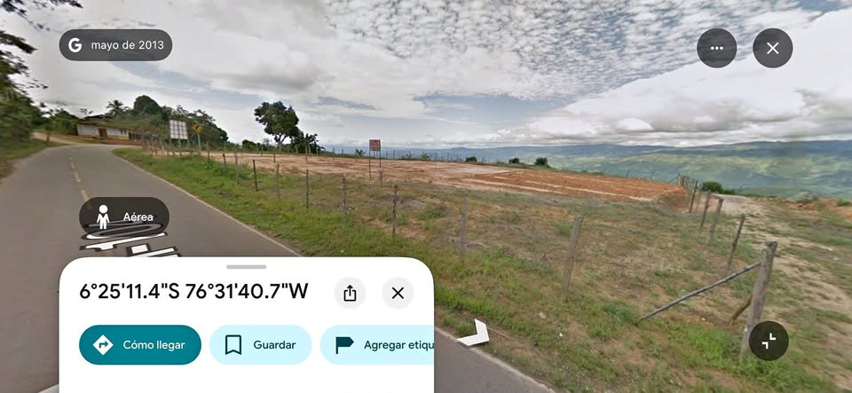

PEN200,000 500 m²

🌟 *¡OPORTUNIDAD ÚNICA EN LAMAS!* Terreno Urbano de 1,500 m² con un Mirador hermoso ¿Buscas el lugar perfecto para un proyecto turístico, hotelero o la casa de campo de tus sueños en la selva? Este amplio terreno urbano en la hermosa e histórica Ciudad de Lamas lo tiene todo: ubicación estratégica, excelente geometría y una vista privilegiada. Características : Área Total y Medidas: 1,500 m² con dimensiones ideales de 30 metros de frente por 50 metros de fondo (excelente distribución para cualquier diseño arquitectónico). Ubicación Estratégica: En la zona del Mirador Turístico, a solo 10 minut